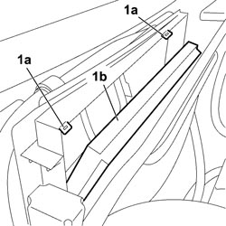
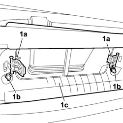

5010B12 CLIMATE CONTROL UNIT AIR INTAKE DUCT - R.R.
- Path
- Procedures > 50 AUXILIARY UNITS > 5010 CLIMATE CONTROL - MISCELLANEOUS > 5010B CLIMATE CONTROL AIR PIPES AND DUCTS > 5010B12 CLIMATE CONTROL UNIT AIR INTAKE DUCT - R.R.
- Kind
- repair procedure (removal / refitting; the operation number is the code)
- Applies to
- all engines; all production periods
- Interactive page
- https://sloeber94.github.io/elrnDB-fCrm/en/#/194000578
Applies to: all engines; all production periods
 Removing
Removing
 Refitting
RefittingOp. 7210E22 R.R. WINDSCREEN BASE TRIM
1. Release the retaining clips (1a) and extract the pollen filter (1b).

Applies to: all engines; all production periods
1. Releaase the two retaining clips (1a) for the pollen filter duct, undo the two nuts (1b) fixing the pollen filter duct and remove the duct (1c) from the vehicle.

Applies to: all engines; all production periods
Refitting
Removing- Check that the pollen filter duct is not damaged.
- Place the pollen filter duct in the vehicle and secure it using the retaining clips and bolts.
Release the retaining clips (1a) and extract the pollen filter (1b).